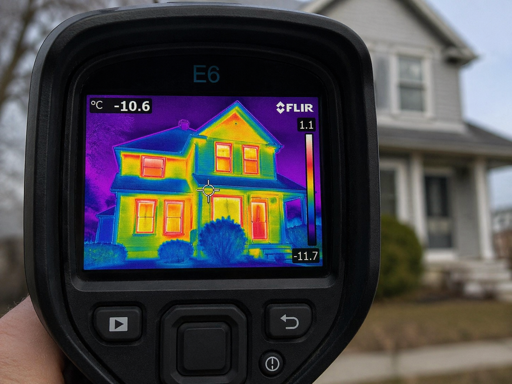

Heating, air conditioning, and heat pump systems are part of building climate engineering (HVAC) and play a key role in indoor thermal comfort. They rely on fundamental thermodynamic principles, particularly energy conservation and heat transfer between different environments.
Modern systems also rely on thermodynamic cycles, especially the refrigeration cycle, which consists of four stages: evaporation, compression, condensation, and expansion. This cycle allows heat to be transferred efficiently rather than directly produced, improving energy performance.
Combustion heating (gas, oil, biomass) relies on chemical reactions to produce heat. Condensing boilers achieve higher efficiency by recovering heat from exhaust gases.
Direct electric heating operates through the Joule effect, converting electricity into heat. While simple to install, its overall efficiency depends on how electricity is generated. Inertia radiators improve comfort by storing heat and releasing it gradually.
Heat pumps represent a more advanced solution. They use a thermodynamic cycle to capture energy from air, ground, or water and transfer it into the building. Their performance is measured by the coefficient of performance (COP), often greater than 3.
There are several types of heat pumps depending on the energy source. Air-to-air systems heat indoor air directly, while air-to-water systems supply radiators or underfloor heating. Geothermal heat pumps use ground energy for high stability, and water-source systems rely on groundwater or surface water.
Air conditioning systems operate on the same thermodynamic principle as heat pumps but in reverse mode, extracting heat from indoor spaces to provide cooling.
The integration of smart control systems, such as connected thermostats and sensors, allows operation to be adjusted to actual needs. Heat recovery ventilation systems further improve efficiency by recovering heat from extracted air.